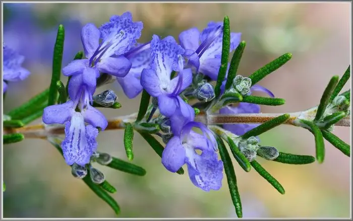

O alecrim é uma planta aromática muito conhecida por suas folhas finas, seu aroma marcante e suas pequenas flores. É uma planta bastante utilizada na culinária, além de possuir grande valor ornamental e cultural.
Possui folhas verdes e estreitas, que permanecem na planta durante boa parte do ano. Suas flores podem apresentar tonalidades azuladas, arroxeadas ou esbranquiçadas, dependendo da variedade.
O alecrim seria uma excelente escolha para um jardim botânico pequeno, pois é uma planta relativamente compacta, resistente e que pode ser cultivada em vasos, canteiros e jardins.
Além de deixar o ambiente mais agradável devido ao seu aroma, o alecrim também possui valor educativo, permitindo que os visitantes conheçam uma planta que pode ser utilizada tanto para fins ornamentais quanto culinários.
Suas flores também podem atrair abelhas e outros polinizadores, contribuindo para a biodiversidade e para o equilíbrio do ambiente do jardim.
Nome popular: Alecrim
Nome científico: Salvia rosmarinus
Família: Lamiaceae
Tipo: Planta aromática e ornamental
Altura: Aproximadamente 50 cm a 1,5 m
Luminosidade: Sol pleno
Solo: Bem drenado e de preferência arenoso
Floração: Pode ocorrer principalmente durante períodos mais quentes
O alecrim pode contribuir para a biodiversidade do jardim ao produzir flores que servem como recurso para diferentes polinizadores, especialmente abelhas.
Sua presença também ajuda a diversificar as espécies cultivadas no jardim botânico, podendo ser utilizada em projetos de educação ambiental e na apresentação de plantas aromáticas aos visitantes.
O alecrim é uma planta originária da região do Mediterrâneo e se adaptou ao cultivo em diversas partes do mundo. Seu aroma característico vem dos óleos essenciais presentes principalmente em suas folhas.
Na culinária, suas folhas são utilizadas para aromatizar diferentes alimentos, como carnes, pães, batatas e molhos.